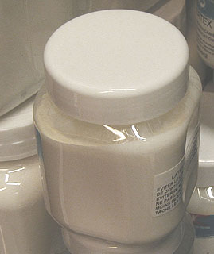
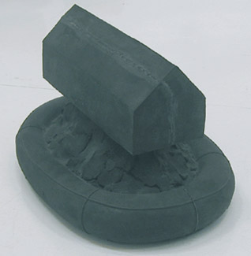

Le
latex
et le caoutchouc
Il s'agit en fait d'un type précis de
polymères ayant l'élasticité comme caractéristique intrinsèque
majeure car c'est en cela qu'ils peuvent être distingués des colles et
des liants (qui eux aussi adhèrent à eux-mêmes). Cependant, quelques
liants
synthétiques (l'acrylique particulièrement) peuvent aussi être
considérés comme des latex car ils présentent un aspect laiteux, collent
à eux-mêmes et sont assez élastiques à sec.
Les latex naturels, eux, sont des émulsions (voir
glossaire, acception 1) riches en
amidon,
alcaloïdes
et hydrocarbures, secrétées notamment par l'hévéa,
d'autres euphorbiacées, des moracées (figuiers), des composacées
(notamment certains pissenlits)... et des papavéracées, le latex du
pavot blanc donnant l'opium. Selon
Jean-Pierre
Delpech, "Un millier de plantes produisent un sève d'où
peut être extrait le caoutchouc, mais la quasi-totalité de celui
utilisé provient de l'hevea brasiliensis." - latex
synthétiques mis à part. On mentionnera aussi parmi les latex la gomme gutte (lire
l'article du glossaire).
Le principal
constituant du caoutchouc naturel est
l'isoprène, un liquide
volatil qui a permis de produire les
premières synthèses
appelées
élastomères (voir
utilisations
modernes). Le caoutchouc n'est rien
d'autre qu'un ensemble d'isoprènes associés sous une forme
terpénique.
Fabrication,
composition
Comme nous l'avons dit, le latex sèche en présence d'air et devient caoutchouc. Ce processus peut
être précipité par
l'incorporation d'un acide (fabrication du caoutchouc ordinaire).
Malgré la variété des modes de fabrication,
la plupart des fabricants
n'indiquent pas la composition ni l'origine des produits qu'ils nous proposent sous
l'intitulé un peu court de "latex". Pour nous représenter les
choses, précisons que concernant les caoutchoucs d'usage courant, environ un
cinquième seulement serait d'origine naturelle et que cette part-là proviendrait en
très large proportion d'Asie et non plus d'Amérique. Lesdits fabricants de
latex à usage artistique (dont les produits, même synthétiques, ne posent pas
forcément un problème de qualité mais de transparence de l'information, de communication) prennent
seulement la
précaution de nous signaler qu'ils sont fortement alcalins. En effet,
grossièrement, le latex n'est rien d'autre qu'environ un tiers de
caoutchouc (isoprène) dans à peu près deux tiers d'eau,
mais pour le conserver en solution liquide, on ajoute un dixième environ
d'ammoniac.
Il vaut donc mieux
éviter le contact cutané et surtout bien aérer le lieu de travail.
Utilisation
en peinture
L'utilisation du latex en peinture (sous-couches, reliefs) et quelques autres
techniques nécessite des précautions :
- poser préalablement une couche isolante (liant
aqueux non réversible ayant un pH
neutre, de type liant vinylique) sur le support
- poser une autre couche isolante une fois le
latex posé et séché de sorte à pouvoir peindre par-dessus.
Une couche moyenne, étalée par exemple avec une brosse, sèche en moins de
24 heures.
La conservation des latex naturels n'est pas
garantie (penser aux élastiques). Elle ne dépend pas que des
interactions chimiques, mais aussi des actions mécaniques qui lui sont
infligées et de la température (le froid provoque un durcissement). Malgré
cela, certains
objets amérindiens en latex se sont assez bien conservés au fil des siècles.
Utilisation
en moulage

Tout d'abord, un rappel : le moulage
du corps humain ne peut être réalisé sans danger qu'avec de
l'alginate. Mouler
un être vivant avec du latex est potentiellement dangereux, même si cela a
été abondamment pratiqué par les Amérindiens, notamment pour protéger les
bébés du froid. Le risque est triple : allergie et agression chimique cutanée
(la transpiration véhicule des acides, le latex est une base), intoxication par
les alcaloïdes présents dans les latex
végétaux.
Une maquilleuse nous a fait part de
l'utilisation de latex pour provoquer un vieillissement artificiel de la peau du
visage notamment. Ce genre de pratiques d'apprentis sorciers est simplement
inadmissible et ne peut être que fortement déconseillé. Il y a atteinte au
corps. Rien ne dit qu'aucune retombée ne peut en découler, au contraire. Il faut
par ailleurs rappeler que l'inhalation d'ammoniaque peut réellement occasionner
des lésions pulmonaires irréversibles. L'application de latex sur le visage est
donc une pratique particulièrement dangereuse.
Quel que soit le procédé, il faut d'abord enduire le modèle (inerte, donc)
de vaseline. En théorie, cette précaution
devrait permettre l'emploi de latex pour le moulage des êtres vivants. Il faut
cependant se méfier des actions mécaniques pouvant provoquer une mise en
contact direct. Le vivant est animé et la prise n'est vraiment pas immédiate.
Par ailleurs, l'ammoniac produit des vapeurs qui, comme nous le disions, sont
toxiques.
1er procédé
Appliquer une couche de latex à l'aide d'une brosse, d'un pinceau à poil
dur. Laisser reposer une nuit et recommencer de sorte à poser trois couches
environ, formant une épaisseur d'un centimètre et demi. Le démoulage est
très aisé car le produit sec est élastique.
Le nettoyage de la brosse pose
par contre un problème : au contact de l'eau et des essences, le latex se
précipite. Certains plasticiens et sculpteurs utilisent préventivement des
pinceaux usagés.
Mentionnons un vieux procédé
- à déconseiller - nécessitant du trichloréthylène, un produit
dangereux qu'il n'est plus très facile de
trouver dans le commerce de toute manière.
Il est possible que d'autres produits
conviennent (notamment un mélange toxique d'éther et de térébenthine), mais il
vaut mieux éviter de courir les risques graves qu'ils induisent.
On nous signale une solution
nettement plus élégante, qui est également employée dans le contexte de
l'application de gomme à masquer, qui
d'ailleurs n'est autre qu'un latex. Il suffit d'imbiber le pinceau de
savon avant de le tremper dans le latex. Cela réduit
l'adhérence de ce produit, ce qui permet un nettoyage beaucoup plus facile.
2ème procédé
Il consiste à tremper le modèle dans un bain de latex. Le nombre de bains
sera déterminé par l'épaisseur de la couche de latex sec qui doit avoisiner
1,5 cm.
Le moule est fait. On peut alors couler différentes matières comme
du plâtre ou une barbotine
et réutiliser le moule plusieurs fois.
Autres utilisations du
latex, détails historiques et techniques
Elles proviennent en premier lieu du monde amérindien et sont assez
nombreuses. Nous mentionnerons le fait que le latex brûlant doucement, il
permettait de fabriquer des lampes sans mèches restant allumées vingt-quatre
heures et que l'on s'en servait comme encens en mélange avec un copal (source J.-P.
Delpech). Brûler du latex naturel contenant notamment des alcaloïdes
devait probablement provoquer certains effets. C'est peut-être pour cette raison
que cette pratique ne s'est pas répandue en dehors de ces civilisations pour
lesquelles le latex avait la particularité d'être véritablement sacré.
Pour leur fameux jeu de balle, les
Olmèques ("ceux du lieu ou
pousse l'hévéa" ou "hommes du caoutchouc", selon les
traductions) fabriquaient une balle en latex.
Ceci démontre que ce produit peut
parfaitement être utilisé à d'autres fins que le moulage.

Et de fait, cela n'a pas échappé aux artistes contemporains.
Il est possible non seulement de couler le latex, mais aussi de réaliser des
objets relativement complexes. Ci-contre, un travail de
Yves Bodiou réalisé par coulage
autour d'un noyau de mousse polyester (Bouée, Série/déluge, 2001).
Christophe Colomb aurait découvert le latex lors de son tout premier voyage,
mais c'est seulement au XVIIIème siècle que La
Condamine et Fresneau ont témoigné en Europe de son intérêt. En fait, le
retard pris était du au fait que la substance
liquide coagulait en présence de l'air lors du long voyage sur l'Atlantique et arrivait à
l'état solide informe, inutilisable.
Pierre-Joseph Macquer (dont la contribution aux arts
plastiques fut importante) et Hérissant, deux chimistes du XVIIIème
siècle toujours, trouvèrent une astuce géniale : un moyen de remettre en solution le
caoutchouc,
c'est à dire le latex sec, à l'aide d'essence de térébenthine
et d'éther. A partir de ce moment, le transport du
produit solide vers l'Europe ne posa plus de problèmes et l'histoire
européenne du latex commença.
Utilisations
modernes
La gomme à effacer en caoutchouc apparut en
premier lieu,
puis d'innombrables applications industrielles. On découvre en 1823 le moyen de
rendre le produit imperméable en
le traitant à la benzine (Mackintosh, Hancock). En
1830, une autre invention (mastication ou malaxage, Hancock), basée sur la capacité
du caoutchouc de s'associer à lui-même, permet notamment d'améliorer la
qualité des gommes à effacer et de rendre le caoutchouc plus malléable. En 1834
apparaissent les premiers bandages pour roues. Puis, Charles et Nelson Goodyear
inventent différents procédés (la
vulcanisation particulièrement)
permettant la fabrication de nouveaux produits à base de caoutchouc (dont l'ébonite) dans les années 1850.
La qualité des caoutchoucs devient progressivement meilleure.
On découvre des additifs accentuant telle ou telle propriété : le soufre
principalement, mais aussi les noirs carbonés ou l'oxyde de zinc qui accroissent
la rigidité, des antioxydants, le toluène,
etc.
Thompson, Dunlop, puis les frères Michelin creusent l'idée des bandes
caoutchoutées pour roues et parviennent en 1895 au pneu démontable pour
automobiles tandis que la production de latex passe de la cueillette à la
plantation. Les enjeux économiques augmentent de manière
radicale, provoquant guerres et horreurs. La principale
zone de production se déplace progressivement en Asie dans la première partie du XXème
siècle (souvenons nous du film Indochine où Catherine Deneuve joue le
rôle de patronne d'une exploitation d'hévéas).
La synthèse du constituant majeur du caoutchouc naturel, l'isoprène,
est réalisée en 1909.
A partir de la seconde guerre mondiale, de nouveaux élastomères
(BUNA, SBR, SBL - voir butadiène
et styrène) prennent rapidement la première place du marché du caoutchouc.
Leurs formules, bien qu'hydrocarbonées, s'éloignent nettement de celle de
l'isoprène. Leurs variétés et leurs applications sont extrêmement
nombreuses. Certaines peuvent intéresser les artistes.
A ce titre, le butadiène, adjuvant de plusieurs peintures synthétiques et
résines, est assez présent comme matériau de base pour la production de
substances empâtées, caoutchouteuses.
Retour
début de page